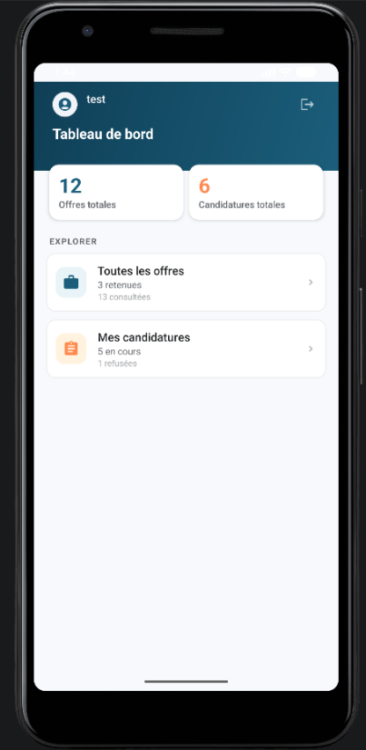

Objectifs
Le but général de ce projet était d'améliorer la qualité et d'optimiser une application existante "Mon carnet de suivi de recherche de stage". Mon équipe et moi avions pour but principal d'améliorer les fonctionnalités existantes et d'en ajouter si nécessaire.
Description/Organisation
Le projet fourni était séparé en deux parties : une application android utilisée par les étudiants et une application Web qui servait à l'administrateur pour suivre l'avancée des étudiants dans leur recherche de stage.
La première étape a consisté à faire un rapport de rétroconception des deux parties, c'est à dire analyser les fonctionnalités des applications web et android existantes, ainsi que leur code.
Durant la deuxième étape nous avons pu proposer des améliorations et des fonctionnalités supplémentaires aux applications. Nous avons ensuite fait des maquettes des applications.
La troisième étape a consisté à corriger les fonctionnalités existantes et développer les nouvelles fonctionnalités.
Outils utilisés
- PHP Storm pour le développement sur Symphony pour la partie concernant l'application Web.
- Android Studio pour le développement Android utilisant un ensemble de fichiers java et XML
- Figma pour la création de la maquette Utilisation d'une API REST pour gérer la communication entre l'application Web et mobile.
Techniques et savoir faire acquis
- Développement sur une application android
- Appliquer des principes d'accessibilité et d'ergonomie
- Identifier les statuts, les fonctions et les rôles de chaque membre de l'équipe
